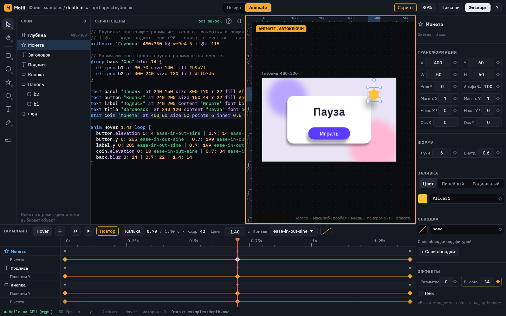
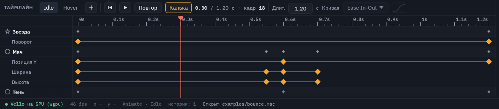
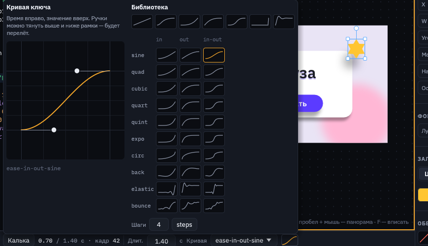
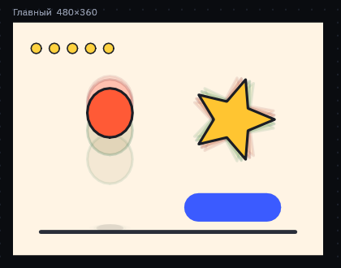
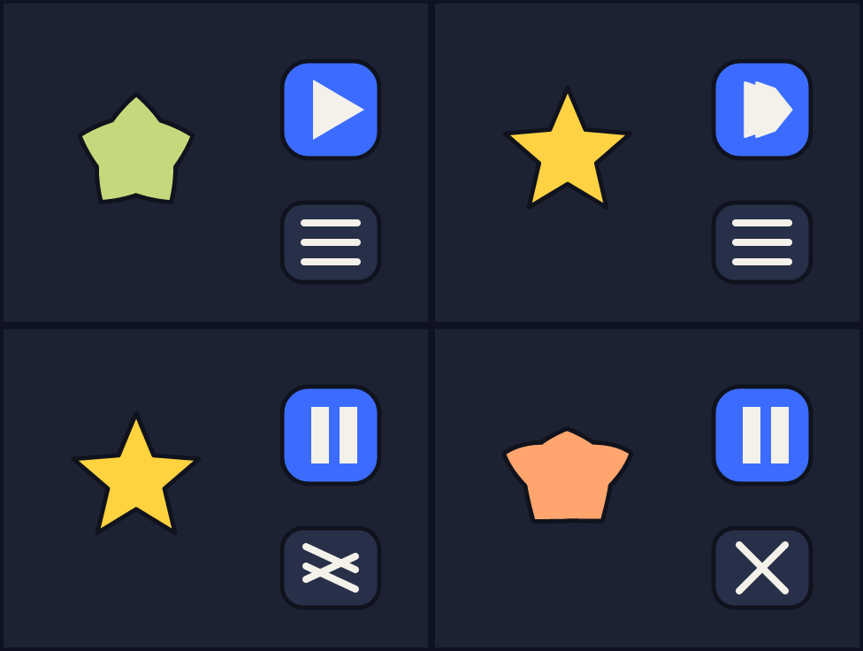
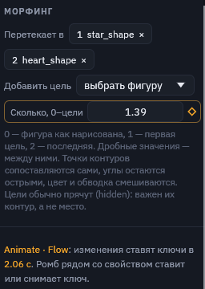

Анимация
Анимация в Motif — это ключи: в момент времени свойство имеет такое-то значение, а между ключами значение плавно меняется по кривой. В одной сцене может быть сколько угодно анимаций, например Idle, Hover и Press.
Design и Animate

- Design — правки меняют саму сцену, то есть начальные значения.
- Animate — любая правка ставит ключ на текущем времени выбранной анимации и записывает его в блок
animскрипта. Переключается кнопкой сверху или клавишей Tab. Клик по таймлайну тоже включает Animate.
Ромб рядом со свойством в панели показывает его состояние: пустой — свойство не анимируется, контур — анимируется, но на этом времени ключа нет, закрашенный — ключ стоит здесь. Клик по ромбу ставит или снимает ключ. K ставит ключи позиции, поворота и масштаба сразу.
Таймлайн

- «Таймлайн» и «Машина состояний» — что показывает нижняя панель. О машине — на странице «Машина состояний».
- Выпадающий список анимаций и «+» для новой. Если в сцене есть машина, сверху списка идут её состояния.
- ⏮ и ▶ — в начало и пуск. Пробел тоже запускает и останавливает анимацию.
- «Повтор» — анимация зациклена (
loopв скрипте). - «Калька» — показывает соседние позы, см. ниже.
- Время и кадр — текущее положение. , и . шагают на кадр назад и вперёд.
- «Длит.» — длительность анимации в секундах.
- «Кривая» — кривая выбранного ключа и её миниатюра. Всегда стоит у правого края панели, в узком окне время показывается короче, чтобы она поместилась. Пока ключ не выбран, в списке написано «нет ключа».
Ниже идут дорожки: строка объекта со сводкой его ключей и под ней строки анимированных свойств. Видны только выделенные объекты (у выделенной группы — и анимированные объекты внутри неё); когда ничего не выделено, видны все анимированные объекты. Клик по линейке или дорожке переводит время. Ключ можно выбрать кликом, перетащить на другое время или удалить клавишей Delete. Правый клик по ключу сразу открывает список кривых.
Кривые
Кривая задаёт, как значение идёт от одного ключа к следующему: равномерно, с разгоном, с торможением, с перелётом или прыжками. Она хранится на ключе, с которого начинается отрезок.

- Ручки тянутся мышью. Если поднять ручку выше рамки, получится перелёт (overshoot): значение проскочит цель и вернётся. В скрипте это
cubic 0.3 0 0.6 1.2. - Библиотека — все 30 кривых с easings.net (sine, quad, cubic, quart, quint, expo, circ, back, elastic, bounce в вариантах in, out и in-out) и
steps Nдля покадровой, «дёрганой» анимации. - Базовые:
linear,ease,ease-in,ease-out,ease-in-out(по умолчанию),hold(значение держится до следующего ключа),spring.
Калька

«Калька» (onion skin) на паузе показывает соседние позы полупрозрачными: красные — раньше по времени, зелёные — позже, через 6 кадров. По ним видно траекторию и ритм движения, не запуская анимацию.
Что можно анимировать
| В панели | В скрипте |
|---|---|
| Позиция, размер | x y w h |
| Поворот, масштаб, наклон | rot sx sy kx ky |
| Прозрачность | opacity |
| Скругление, лучи, внутренний радиус | r points inner |
| Заливка, цвет и толщина обводки | fill stroke stroke_w |
| Текст: размер, интервал, появление, волна | font-size letter-spacing reveal wave phase |
| Эффекты: размытие, высота, тень | blur elevation shadow-x shadow-y shadow-blur |
| Морфинг: сколько фигура перетекла в цели | morph |
| 3D-тело: глубина, сужение, разворот, наклон | depth taper yaw pitch |
Морфинг
Фигура может перетекать в контуры других фигур: шар в звезду, звезда в сердце, «play» в «pause», меню в крестик. Цели — обычные фигуры сцены, их перечисляют по порядку, а ключ morph ведёт превращение: 0 — фигура как нарисована, 1 — первая цель, 2 — вторая, дробные значения — между ними.
star star_shape size 150 150 points 5 fill #ffd23f hidden
path heart_shape d "M 0 60 C -40 30 …" fill #ff5c8a hidden
ellipse blob at 150 170 size 120 120 fill #5ee0a0 morph star_shape heart_shape
anim Flow 4s loop {
blob.morph 0: 0 ease-in-out | 1: 1 | 2.6: 2 | 4: 0
}- Точки сопоставляются сами. Контуры обходятся в одну сторону и с самого подходящего начала, поэтому точки не перекрещиваются и форма не выворачивается. Острые углы остаются острыми: звезда в конце — точно звезда.
- Цвет и обводка смешиваются: заливка, цвет и толщина обводки идут от фигуры к цели. Если у одной стороны заливки нет, цвет плавно появляется или гаснет.
- Части без пары отделяются от ближайшей части другой фигуры или сливаются с ней: треугольник «play» делится на две полоски паузы, три линии меню сходятся в две линии крестика. Работают и замкнутые фигуры, и открытые линии.
- Важен только контур цели, а не её место: фигура морфится там, где стоит сама. Цели обычно прячут (
hidden). В цель годится любая фигура: прямоугольник, эллипс, звезда, многоугольник, путь, текст. - Работает со всем остальным: кости гнут уже перетёкшую фигуру, мягкое тело и верёвка берут её форму, экспорт запекает каждый кадр.

morph.msc в кадрах 0.5, 0.85, 1.45 и 2.1 с: шар на полпути к звезде, «play» делится на полоски паузы, меню сходится в крестик, звезда перетекает в сердце.
В редакторе это раздел «Морфинг» в панели свойств фигуры. «Добавить цель» выбирает фигуру из сцены, крестик на цели убирает её. Поле «Сколько» с ромбом ставит ключи в Animate, как любое другое свойство, а на таймлайне появляется дорожка «Морфинг».
Как анимация выглядит в скрипте
anim Hover 1.4s loop {
button.elevation 0: 4 ease-in-out-sine | 0.7: 14 ease-in-out-sine | 1.4: 4
button.y 0: 205 | 0.7: 199 | 1.4: 205
back.blur 0: 14 | 0.7: 22 | 1.4: 14
}Одна строка — одно свойство: объект.свойство время: значение [кривая] | время: значение …. Кривая после значения действует до следующего ключа. Подробнее — в разделе «Скрипт сцены».
Совет для интерфейса. Делайте по анимации на каждое состояние кнопки (Idle, Hover, Press) и анимируйте «Высоту»: тень будет вести себя согласованно на всём экране, потому что свет у сцены общий.